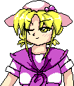

- Welcome to Touhou Wiki!
- Please register to edit. For assistance, check in with our Discord server or IRC channel.
Louise
| ルイズ Louise Luize, Luise | |
|---|---|
|
 Louise in Mystic Square Makai PersonMore Character Titles | |
| Species | |
| Location | |
Music Themes | |
| |
Appearances | |
| Official Games | |
| |
Louise (ルイズ Ruizu) was one of the many demons coming out of Makai into Gensokyo during Mystic Square. Although she denied it at first, she really did want to go to the human world. However, she had the bad luck of running into the heroine inside the border space between Gensokyo and Makai before making it out into the human world and was defeated. She was actually rather polite too.
Character Basis[edit]
Name[edit]
Her name is "Louise" (ルイズ), which is named after a character from Downtown Monogatari: Yaneura no Serenade (ダウンタウン物語 屋根裏のセレナーデ), one of the stories from the compilation manga Chotto Commercial (ちょっとコマーシャル) by Izumi Takemoto.
Design[edit]
Louise's text-box image shows that she has yellow eyes, yellow hair, and wears a white hat with a purple bow. She wears a white dress with a purple collar. Her eyes seems to be closed most of the time. The sprite of Louise on Stage 4 shows that she has red eyes and blue hair with a blue bow. Her dress's color is also changed accordingly, and it has red edges on the skirt. She also seems to have a ghostly aura around her.
Story[edit]
- Mystic Square
- Main article: Mystic Square Story
<Insert Summary>
Relationships[edit]
- Shinki
Shinki is the creator of Makai and everything within it. In light of this, Shinki may also have created Louise.
Additional Information[edit]
- Louise is the only PC-98 character that reappears later on in the same game as a midboss.
Fandom[edit]
Official Sources[edit]
<toggledisplay showtext="Show sources" hidetext="Hide sources">
- 1998/12/30 Mystic Square - Stage 2 Dialogue
</toggledisplay>
| This page is part of Project Characters, a Touhou Wiki project that aims to write proper descriptions for all official characters of Touhou Project. Please keep the character page guidelines in mind when contributing. |